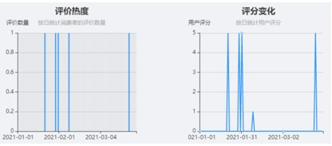

湖北仙桃莲藕2022年第一季度电商销售白皮书
由于多地疫情复发和春节年货采购等因素的影响， 2022年第一季度，国内蔬菜市场价格整体呈现出先涨后跌的趋势。湖北仙桃莲藕的电商销售情况也随之呈现出较为波动状态，总体消费热度处于较低水平，但消费满意度极高，说明仙桃莲藕品质上乘，拥有可期的市场潜力。
一、
湖北仙桃莲藕2022第一季度日消费热度和消费评价概况度
1.消费热度：一季度消费热度较低，平均每天小于1条评价
2022年第一季度，湖北仙桃莲藕市场的消费热度虽有波动，但从整体来看，市场活跃度较低。1月底受到春节年货采购的影响，消费者评价数量达至一季度峰值水平，显著多于2月及3月，此后消费热度有所减弱，且表现出不具规律的波动状态。
2.消费评价：综合评分为4.15分，消费者对莲藕整体非常满意
2022年第一季度，消费者对湖北仙桃莲藕的综合评分为4.15分；从单日用户评分数据来看，消费者给出5分评价的天数最多，这说明仙桃莲藕在2022年第一季度的整体消费评价很高，消费者对湖北仙桃莲藕的满意度较高，产品购买体验良好。
3.同期对比：同比消费热度及消费评价满意度均有大幅提升

由上图可知，2021年第一季度的消费者评价数量走势图密度极低，平均每月只有1-2条评价，而2022年第一季度的消费者评价数量上涨至5-10条，消费者的购买热情明显高于去年同期；此外从用户评分来看，2021年第一季度消费者对仙桃莲藕打出的综合评分为4.2分，与2022年同期的4.15分相差甚微，说明该产品的品质始终较为优良，消费者满意度维持在较高水平。
二、
湖北仙桃莲藕2022年第一季度消费者整体满意度分析
1.用户满意度概况：整体消费者满意度较高，但仍有提升改进空间
75.76%的消费者对湖北仙桃莲藕持“非常满意”的态度，18.18%的消费者表示“非常不满意”，还有6.06%的消费者持中立态度。这说明从整体来看，湖北仙桃莲藕满足了大多数消费者的期望，但仍存在一定的问题导致了负面和中立评价。
2.用户评价概况：消费者对网购莲藕具有多样性的诉求，价格、口感和售后是最集中的评价属性。
对消费者的评价内容进行分析归纳后可以发现，价格、口感和售后是消费者最看重的3个评价要素，占比都为21.43%；此外，10.72%的消费者更看重包装这一属性，10.71%的消费者关注物流服务水平，还有7.14%的消费者对于品质这一属性给出了评价。
三．湖北仙桃莲藕2022年第一季度消费者对产品属性具体评价分析
1.价格：价格便宜实惠，购买性价比高，深受消费者喜爱
在对仙桃莲藕价格这一属性的评价中，所有消费者均给出了正面评价，66.67%的消费者认为仙桃莲藕价钱便宜，足够实惠；另有33.33%的消费者评价其性价比很高，这说明该产品定价合理，符合消费者心中对于莲藕的价格期待。
2.口感：超八成消费者表示莲藕清甜可口，但仍收到了部分负面评价
从消费者对于湖北仙桃莲藕口感的评价结果来看，83.33%的消费者对本产品的口感给出了正向评价，认为莲藕味道清甜，口感不错；但是还有16.67%的消费者表示莲藕口感很差。
3.售后：良好的客服态度让顾客青睐湖北仙桃莲藕
“顾客就是上帝”。只有良好的服务态度和售后保障，才能留住顾客并树立品牌口碑。消费者对湖北仙桃莲藕的客服态度表示出了极大的满意和正面评价，因此获得更多消费者的信赖。
4.物流：“送货速度很快”是消费者对仙桃莲藕物流属性的一致评价
2022年第一季度消费者对仙桃莲藕在物流方面的评价均为正面，对物流效率的满意度极高。
5.品质：品质属性的消费者评价两极分化严重
50%的消费者对湖北仙桃莲藕给出了正面评价，认为其质量不错；但另有50%的消费者给出的是负面评价，主要原因是认为种苗有点小。
6.包装：包装大气、做工精细是仙桃莲藕给消费者留下的良好印象
本季度消费者对仙桃莲藕包装的相关评价均为正面，“好”、“精细”、“大气”是消费者对包装这一属性给出的评语。
四、湖北仙桃莲藕发展建议
1. 政府建议
（1）强化政策扶持，优化仙桃莲藕的发展环境
由2022年第一季度消费者评价概览可知，湖北仙桃莲藕虽然热度不强，但凡是购买了的消费者都认可其产品品质，给出了较高水平的消费评价。因此政府应积极鼓励莲藕产业的发展，培育其成为当地的农业支柱产业。
具体而言，可以鼓励沔城县农民成立家庭农场、专业合作社等，引导有实力的合作社向着市级龙头企业、省级龙头企业方向发展；可以定期组织专家对全市规模莲藕种植合作社开展职业农民培训，提高社员莲藕标准化种植水平；还需整合全市农业发展资金，对莲藕种植大户、合作社、龙头企业进行扶持，帮助他们争取涉农资金项目。
（2）借助仙桃市的富硒资源，强化莲藕产业品牌建设
湖北仙桃市地处江汉平原，是著名的鱼米之乡。湖北省地质调查院曾对江汉流域经济区农业地质进行调查时发现，湖北仙桃富硒土壤面积达540平方千米，富硒莲藕基地近10 万亩。
因此仙桃市政府可以当地丰富的富硒资源，着力打造中国富硒农都，建成百万亩特色高效富硒农业产业板块。乘着富硒产业发展东风，将开发富硒莲藕与仙桃地方优势品牌“沔城莲藕”等的有机结合，进一步打造仙桃富硒莲藕品牌，提升仙桃莲藕在全国的知名度。
新媒体渠道包括微信平台、微博平台、知乎等问答平台、百科平台和直播平台。政府可以根据当前湖北不同地区和品牌的莲藕营销现状，指导他们在各大新媒体平台开设官方账号，并引进农产品电商运营、电商供应链人才来帮助指导品牌的运营。
在宣传内容制作方面，可以结合不同季节的特点、不同地域文化打造独特性的宣传素材。例如， “李白赠莲引神种”的美丽传说就发生在湖北仙桃，可以以此典故为线索制作莲藕宣传片，增强仙桃莲藕的文化内涵；纪录片《舌尖上的中国》中曾提到在湖北有一批职业挖藕人，每到采藕的季节就从老家赶到有藕的地方辛苦劳作，因此在进行撰写宣传文案或微博话题内容述时，便可将“职业挖藕人”、“舌尖上的中国”等文案作为关键词。通过讲述他们平凡而又质朴的故事，既能够引发消费者的共鸣，又向他们全方位展示了莲藕从农田到市场的过程，同时又利用权威性的媒体节目增强了仙桃莲藕的品牌价值。
（4）依托湖北当地特色旅游资源提升莲藕的知名度
莲藕在湖北已经成带连片发展，已形成一方特色，以洪湖红色旅游、蔡甸莲文化摄影、汉川刁汊湖采摘游为代表的“莲-旅”融合开发已形成产业规模和市场影响力。政府可以借鉴体验式营销成功案例，依托湖北当地的旅游资源和基础设施，开展莲藕生产基地参观、挖藕体验等活动，为消费者提供良好的线下体验，让消费者切实体验到仙桃莲藕的优良品质与特色，将其打造成当地旅游业的特色产品。
2.
平台商家建议
湖北仙桃莲藕2022年第一季度的消费者评价数据显示，价格便宜实惠、售后服务态度好、送货速度快是消费者给出好评的主要原因。基于此对于电商平台有三点建议：①在定价上，进行充分的市场调研，了解国内电商市场的莲藕价格行情，结合莲藕上市周期和节假日及时调整产品价格。例如，每年第一季度春节备年货期间又逢早藕新鲜上市期间，便可适当提高价格；“618”等购物节时便可联动其他当季蔬菜瓜果产品开展直减、折扣、满减、等各类优惠活动。②在售后上，农产品电子商务的主体运营人员多为当地农民，因此建议对客服人员进行系统规范化的培训，同时要健全产品售后服务体系，为消费者提供优质的售后服务。③在物流上，建议商家引入冷链物流运输体系，保持莲藕在采摘、加工、储藏、配送、
销售等全套运输环节均处于低温状态，以缓解莲藕褐变的速度，保障其在市场上的销售品质。此外，还可以根据具体情况实时物流外包，让一些有实力的三方物流公司来进行运输操作，满足消费者对莲藕新鲜度和运输速度的要求。
3.生产厂家建议
由2022年第一季度消费者评价内容可知，虽然超八成消费者表示仙桃莲藕清甜可口，但仍有部分消费者对于仙桃莲藕的口感给出了负面评价。因此建议生产厂家一方面加强优质、高产、抗病品种以及加工专用品种的选育，提升莲藕产品的口感和品质；另一方面，莲藕种植企业可以在以生鲜莲藕为主体的情况下，根据消费者多样化的饮食习惯，研发如像“泡藕片”、小包装藕粉、藕酒、莲心茶的深加工产品，开展荷叶、藕节、小藕等的综合加工利用，提高产品的附加值。
消费者在网购莲藕时应多进行对比，查看已购消费者对于产品口感、色泽、包装等方面评价，综合判断产品品质。此外，莲藕属于生鲜农产品，第一季度整体气候较为干燥，气温较低，切开的莲藕大约可以保存7天，完整的莲藕一般能够保存半个月左右，因此提醒消费者在购买本产品后要注意莲藕的储存保鲜。最后，莲藕的收成分为两次，第一次收获是入秋，此时的莲藕鲜脆可口；而年底是吃莲藕的最佳季节，那时的莲藕经过了莲花开放，口感更粉糯，因此鼓励消费者多多关注蔬菜市场信息，及时购入新鲜上市的莲藕产品。